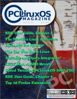
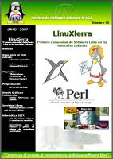

Revistas de 2007
Esta página contiene enlaces a revistas sobre software libre y distribuciones GNU/Linux publicadas en 2007
ALT Magazine
Página web: ALT Magazine

Número 1 - 2007 abril
Descarga (PDF 10.5 MB español)

Número 2 - 2007 julio
Descarga (PDF 8.6 MB español)

Número 3 - 2007 septiembre
Descarga (PDF 9.2 MB español)

Número 4 - 2007 noviembre
Descarga (PDF 9.2 MB español)
Begins - La Revista de software libre y código abierto
Página web: Revista Begins
Número 10 - 2007 agosto
Descarga (PDF 9.5 MB español)

Número 11 - 2007 octubre
Descarga (PDF 7.0 MB español)

Número 12 - 2007 diciembre
Descarga (PDF 8.3 MB español)

Número 7 - 2007 febrero
Descarga (PDF 8.5 MB español)

Número 8 - 2007 abril
Descarga (PDF 8.3 MB español)
Número 9 - 2007 junio
Descarga (PDF 4.0 MB español)
Free Tux
Página web: Revista Free Tux

Número 1 - 2007 agosto
Descarga (PDF 3.5 MB español)
Número 2 - 2007 septiembre
Descarga (PDF 2.2 MB español)

Número 3 - 2007 octubre
Descarga (PDF 10.9 MB español)

Número 4 - 2007 noviembre
Descarga (PDF 15.4 MB español)
Full Circle
Página web: Revista Full Circle

Número 0 - 2007 abril
Descarga (PDF 2.5 MB español)

Número 0 - 2007 abril
Descarga (PDF 2.5 MB inglés)

Número 1 - 2007 junio
Descarga (PDF 6.5 MB español)

Número 1 - 2007 junio
Descarga (PDF 6.3 MB inglés)
Número 2 - 2007 junio
Descarga (PDF 6.2 MB inglés)
Número 3 - 2007 julio
Descarga (PDF 4.4 MB inglés)
Número 4 - 2007 agosto
Descarga (PDF 5.4 MB inglés)

Número 5 - 2007 septiembre
Descarga (PDF 9.1 MB inglés)

Número 6 - 2007 octubre
Descarga (PDF 4.9 MB inglés)

Número 7 - 2007 noviembre
Descarga (PDF 5.0 MB inglés)
Número 8 - 2007 diciembre
Descarga (PDF 7.1 MB inglés)
(In)secure Magazine
Página web: Revista (In)secure Magazine

(In)secure Magazine
Número 10 - 2007 febrero
Descarga (PDF 11.0 MB inglés)

(In)secure Magazine
Número 11 - 2007 mayo
Descarga (PDF 10.1 MB inglés)

(In)secure Magazine
Número 12 - 2007 julio
Descarga (PDF 8.0 MB inglés)

(In)secure Magazine
Número 13 - 2007 septiembre
Descarga (PDF 7.7 MB inglés)

(In)secure Magazine
Número 14 - 2007 noviembre
Descarga (PDF 10.2 MB inglés)
MiniMiniM - Mini revista gratuita de software gratuito y más
Página web: Revista MiniMiniM

Número 1 - 2007 enero
Descarga (PDF 27.2 MB español)
Número 2 - 2007 mayo
Descarga (PDF 20.6 MB español)
Número 3 - 2007 noviembre
Descarga (PDF 18.8 MB español)
Programar
Página web: Programar

Número 10 - 2007 septiembre
Descarga (PDF 9.6 MB portugués)

Número 11 - 2007 noviembre
Descarga (PDF 9.9 MB portugués)

Número 6 - 2007 enero
Descarga (PDF 4.6 MB portugués)
Número 7 - 2007 marzo
Descarga (PDF 7.7 MB portugués)
Número 8 - 2007 mayo
Descarga (PDF 6.6 MB portugués)

Número 9 - 2007 julio
Descarga (PDF 7.7 MB portugués)
Revista SL - El software libre hecho revista
Página web: Revista SL

Número 7 - 2007 marzo
Descarga (PDF 6.7 MB español)

Número 8 - 2007 julio
Descarga (PDF 9.5 MB español)

Número 9 - 2007 diciembre
Descarga (PDF 6.6 MB español)
The PCLinuxOS Magazine
Página web: Revista The PCLinuxOS Magazine

Número 10 - 2007 junio
Descarga (PDF 3.8 MB inglés)

Número 11 - 2007 julio
Descarga (PDF 3.5 MB inglés)

Número 12 - 2007 agosto
Descarga (PDF 3.8 MB inglés)

Número 13 - 2007 septiembre
Descarga (PDF 3.2 MB inglés)
Número 14 - 2007 octubre
Descarga (PDF 2.4 MB inglés)

Número 15 - 2007 noviembre
Descarga (PDF 2.4 MB inglés)

Número 16 - 2007 diciembre
Descarga (PDF 10.4 MB inglés)

Número 5 - 2007 enero
Descarga (PDF 2.5 MB inglés)

Número 6 - 2007 febrero
Descarga (PDF 2.7 MB inglés)

Número 7 - 2007 marzo
Descarga (PDF 4.3 MB inglés)

Número 8 - 2007 abril
Descarga (PDF 2.7 MB inglés)

Número 9 - 2007 mayo
Descarga (PDF 1.9 MB inglés)
Uxi - Revista de software libre de la UCI
Página web: Revista UXi

vol 1 nº 1 - 2007 enero
Descarga (PDF 1.1 MB español)
vol 1 nº 2 - 2007 febrero
Descarga (PDF 1.2 MB español)

vol 1 nº 3 - 2007 marzo
Descarga (PDF 2.0 MB español)

vol 1 nº 4 - 2007 abril
Descarga (PDF 3.0 MB español)
vol 1 nº 5 - 2007 mayo
Descarga (PDF 2.3 MB español)

vol 1 nº 6 - 2007 junio
Descarga (PDF 1.0 MB español)

vol 1 nº 7 - 2007 septiembre
Descarga (PDF 1.4 MB español)
vol 1 nº 8 - 2007 noviembre
Descarga (PDF 2.2 MB español)
Autor: Bartolomé Sintes Marco
Última modificación de esta página: 8 de julio de 2019